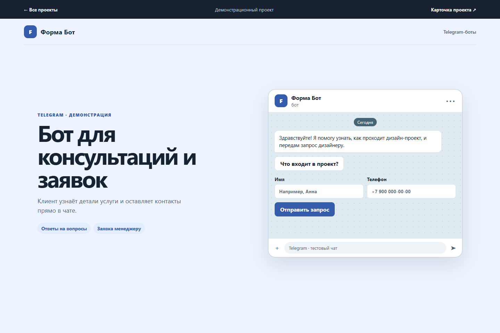
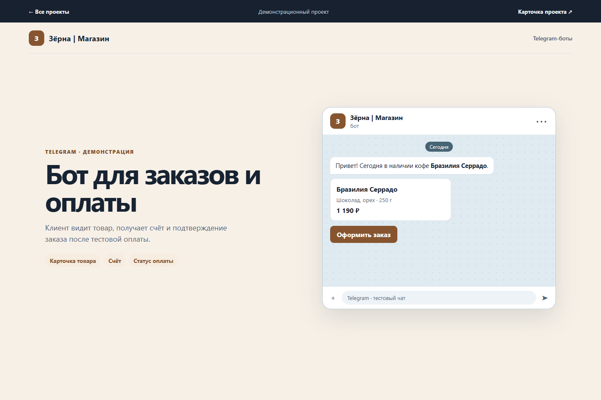
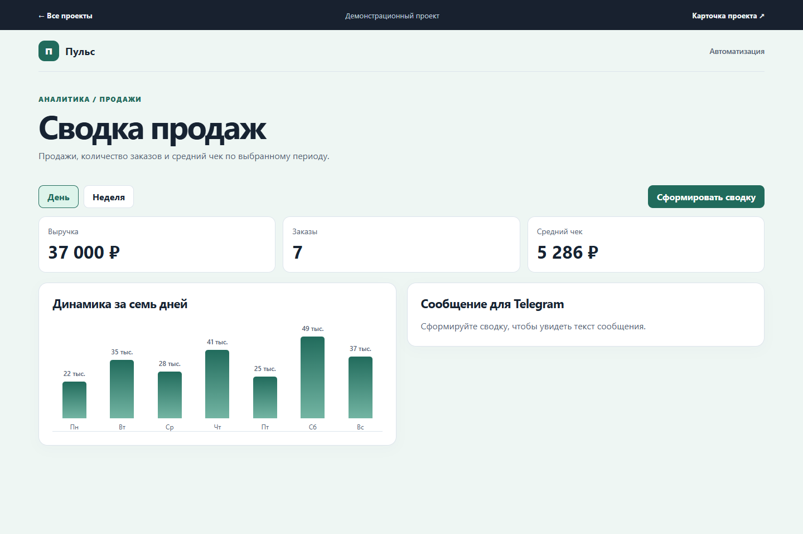
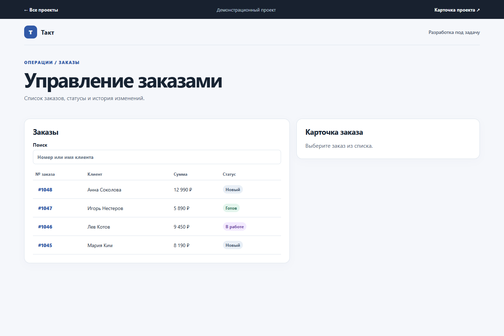

Сайты
Лендинги, сайты компаний и каталоги с понятным путём от знакомства до заявки.
Создаём сайты и Telegram-ботов, связываем сервисы и автоматизируем повторяющиеся задачи. Ведём проект от постановки задачи до запуска.
Посмотреть услуги ↓Лендинги, сайты компаний и каталоги с понятным путём от знакомства до заявки.
Консультации, сбор заявок, запись на услуги и сценарии продаж.
Маршрутизация заявок, уведомления и отчётность по расписанию.
Помощники по базе знаний и инструменты для команды поддержки.
Связь сайтов и ботов с Битрикс24, CRM и сторонними API.
Веб-приложения и внутренние панели под процессы вашей команды.
Уточняем, кто будет пользоваться решением и какой результат нужен.
Показываем прототип, обсуждаем объём и критерии приёмки.
Проверяем ключевые действия и передаём проект с инструкцией.
14 ознакомительных кейсов. В каждом можно открыть интерфейс, пройти сценарий и посмотреть скриншоты.

Собрал адаптивный лендинг, форму с проверкой полей и экран подтверждения с номером заявки.
Открыть демо ↗Описание и скриншоты
Собрал главную страницу, карточки направлений и подробную карточку объекта с описанием работ.
Открыть демо ↗Описание и скриншоты
Собрал каталог с фильтром по категориям, карточки товаров и корзину с количеством и суммой.
Открыть демо ↗Описание и скриншоты
Реализовал ветку частых вопросов, форму контактов и карточку передачи обращения менеджеру.
Открыть демо ↗Описание и скриншоты
Собрал выбор времени, подтверждение, карточку записи и отмену с освобождением времени.
Открыть демо ↗Описание и скриншоты
Реализовал карточку товара, выставление счёта и обработку успешного тестового платежа.
Открыть демо ↗Описание и скриншоты
Собрал редактируемую тестовую заявку, цепочку обработки и журнал с результатом каждого шага.
Открыть демо ↗Описание и скриншоты
Собрал переключение периода, расчёт показателей из тестовых продаж и предпросмотр сообщения для Telegram.
Открыть демо ↗Описание и скриншоты
Собрал локальный поиск по трём учебным документам, ответы с источниками и сценарий поиска без совпадений.
Открыть демо ↗Описание и скриншоты
Собрал запрос клиента, черновик по категории обращения и передачу истории оператору.
Открыть демо ↗Описание и скриншоты
Реализовал сопоставление полей, проверку контакта, создание сделки и защиту от повтора в демонстрационной CRM.
Открыть демо ↗Описание и скриншоты
Собрал демонстрацию сопоставления полей, предпросмотр REST-запроса, тестовую карточку сделки и обработку повтора.
Открыть демо ↗Описание и скриншоты
Подключил GitHub REST API, обработку ошибок и автономный тестовый ответ для презентаций.
Открыть демо ↗Описание и скриншоты
Собрал поиск, список, карточку заказа, смену статуса и запись в историю.
Открыть демо ↗Описание и скриншоты